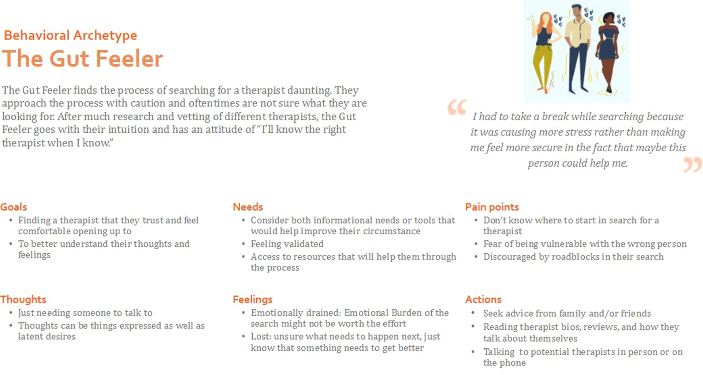
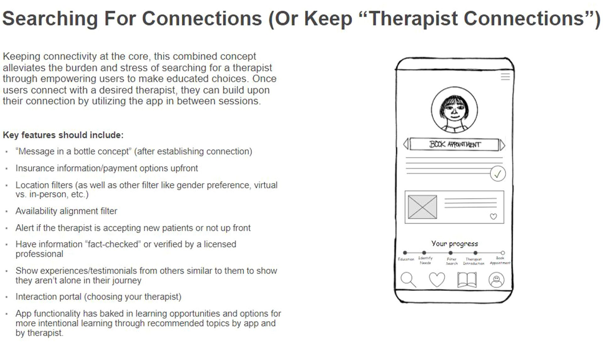
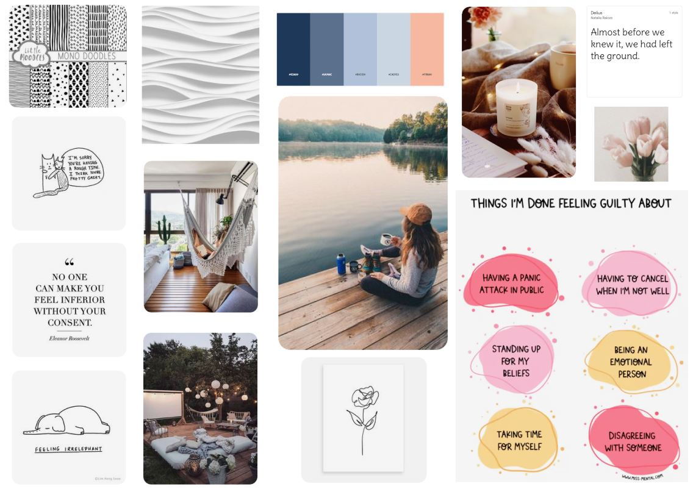
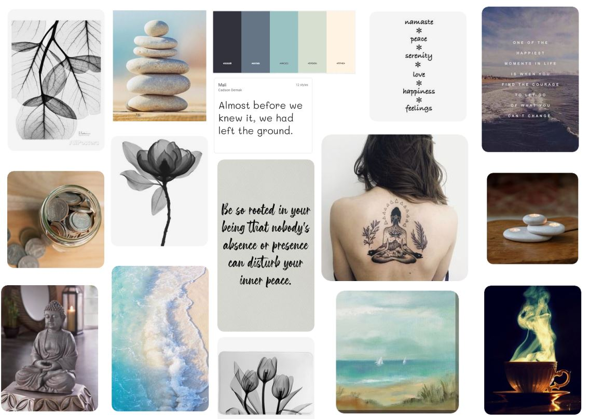
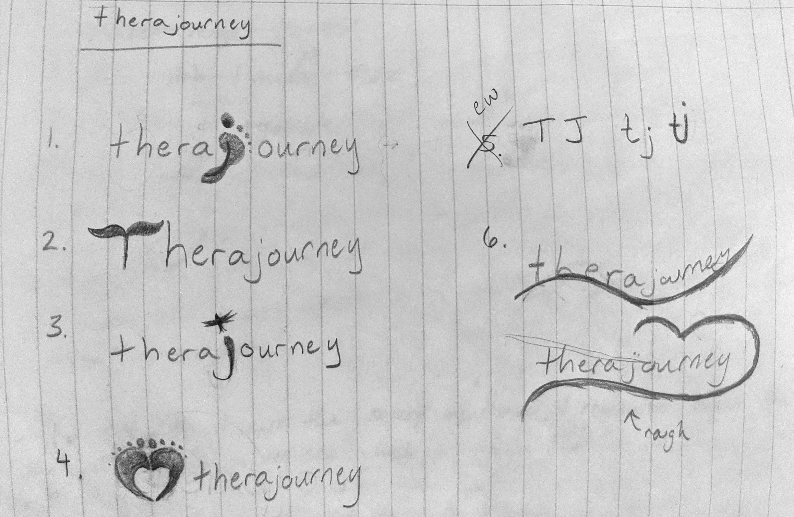

Project Details
UX/UI Project | January 2021 - June 2021
Our society is changing the way it views mental health needs and more people are interested in personal care. Often times, people searching for a therapist are at a low point in their life, with little emotional energy to spare. The process needs to maximize comfort, minimize burden, and increase ease while identifying a therapist that is relatable, qualified, and trustworthy.
My Role
In the first six weeks, I worked with three other team members to answer the question:
"How might we help patients find a therapist who is right for their individual needs?"
Over this period of time, we each played an equal role in conducting user interviews, defining behavioral archetypes and creating a journey map, putting together a competitive analysis of primary, secondary, and tertiary competitors, creating low fidelity prototypes based on concepts, conducting concept testing, and bringing it all together in a study findings report.
For the last 16 weeks, I branched off and used the data gathered from the first portion to dictate the direction I would take the app. From here, I created a sitemap, user flow, wireframe, and a low-fidelity prototype. Then I thought about the UI design. I generated ideas using mind maps and mood boards and came up with a styleguide to infuse my prototype with high-fidelity UI.
Project Summary
The goal of this project was to create an app concept for finding the right therapist for one's individual needs.

From sixteen initial interviews and research, we created archetypes and analyzed their needs and pain points to come up with four initial concepts and low-fidelity prototypes. These concepts were tested again with an additional six individuals. We took that data and created a final merged concept.

The resulting final concept combined the most well-received features from the initial four concepts and prototypes. After this point, I branched off from the team to create my own take on the app, which would be a combination therapist finder, community support platform, and education resource. I decided to call it "Therajourney."
Challenges
Some specific problems we addressed in this project were:
- Meeting users where they are on the therapist search journey, taking into account varying levels of therapist/therapy experience.
- Navigating insurance and payment.
- Facilitating patient-to-therapist communication.
- Preference filtering and matching.
- Access to mental health education and resources.
- Therapist availability and scheduling.
Some of the reoccurring pain points we came across in our research that this project solves are that people didn't know what to expect or where to start their search, scheduling conflicts and therapist unavailability, insurance and payment issues, feeling overwhelmed with options, and the inability to actually connect with the chosen therapist on a deeper, emotional level.
Some of the technical constraints that we had to keep in mind were privacy risks since users would have to share their location and profile information in order to receive recommendations close by and based on their needs and personality.
After I took the project in my own direction, I discovered a new set of challenges. Sometimes as you develop the user flow and sitemap of a project, the way some paths can connect could be better optimized. Additionally, creating a new brand identity from what feels like nothing adds another layer of challenge. However, I was determined to create a functional and beautiful app that makes the task of finding a therapist an easy process.
Solutions
To solve the more technical challenges, my team decided on these solutions:
- Establish a user profile using a baseline quiz to understand their needs and offer recommendations.
- Insurance information and payment options are shown upfront.
- Include a messaging system and interaction portal.
- Provide therapist recommendations based on profile, and allow users to search and filter based on location, type of therapy, specialties, availability, insurance, gender, etc. In addition, allow the user to "meet" the therapist before booking an official appointment to gauge personality match and relatability without commitment.
- Offer passive and active learning opportunities from credible sources.
- Show therapists' calendar and availability upfront with an easy to use scheduling interface.
These features addressed our most important key findings pertaining to discovery, accessibility, financials, motivation, streamlined search, education, reviews and recommendations, and patient-therapist interaction.
From creating my initial site map, user flow, and low-fidelity prototype, I found that as I continued on the design process, some elements ended up moving under a different hierarchy to make things easier to access. This differs from a more top-down perspective that site maps and user flows offer, which I found to be good for a general overview but may have to change when put in practice.
For example, I initially thought that it would be better to have mail and chat live under profile. That meant that in order to view messages, they would have to click away from the home feed. When I was designing the low-fidelity prototype, I found it somewhat impractical and taking inspiration from other apps that have a message feature, I decided that it would be better to have the mail always present no matter what screen you're on. I believe that this change will improve patient to therapist message responsiveness and further encourage peer to peer and patient to therapist interaction.
For my own design solutions, I found mind mapping exercises to be useful for finding what keywords I wanted to focus on when deciding what feeling I wanted the app to give the user. This brainstorming exercise led me to create two associated mood boards, which I could test and get initial feedback on for the visual aesthetic that the app would have.



After considering both aesthetics, I chose to go with the first mood board inspiration, because I wanted the app to have a more comfortable/cozy therapy vibe vs. meditation, which could be confused as a yoga app. Based on the mood board, I made a basic styleguide to go with the app. I also made some rough logo concepts, eventually settling on keeping it simple with a heart.

The final step was to create my high-fidelity prototype, using my newly defined styleguide. In order to fully build out the majority of the pages, navigation, and other connections/animation, I would need to add more pages than what I had in my basic low-fidelity version. I added the baseline quiz for those signing up and a way to navigate back to the quiz if the user wanted to retake it at some point or skipped it initially. I also added a verified checkmark that would be next to certified therapists on the app, so users can tell the difference between a doctor and another regular user. I also expanded the Education section to better show exactly how I wanted it to look and function.
All that was left to finally do was apply colors, fonts, images, and other UI treatments.
Results
Where do I go from here?
I think that if I were to continue this project past this point, I would design the therapist portal for them to enter their qualifications, bio, and other information and have a way for therapists to manage their patients.
Additionally, aside from the icons that were defined in my styleguide, I would want to re-do the other icons like what were used in the Education section. For time purposes of this project, I just pulled those assets from Creative Commons, and if I were to remake them, I would want them to look more doodle-y like what I wrote about in my styleguide description.